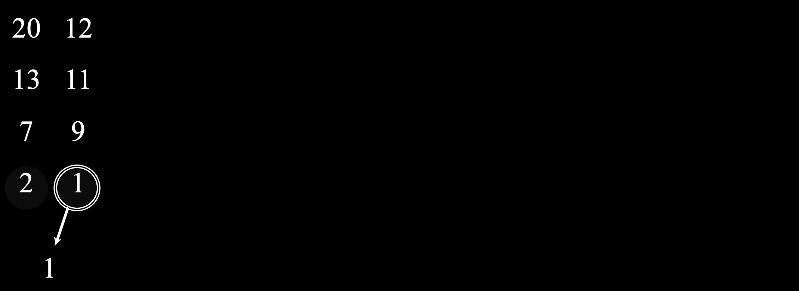
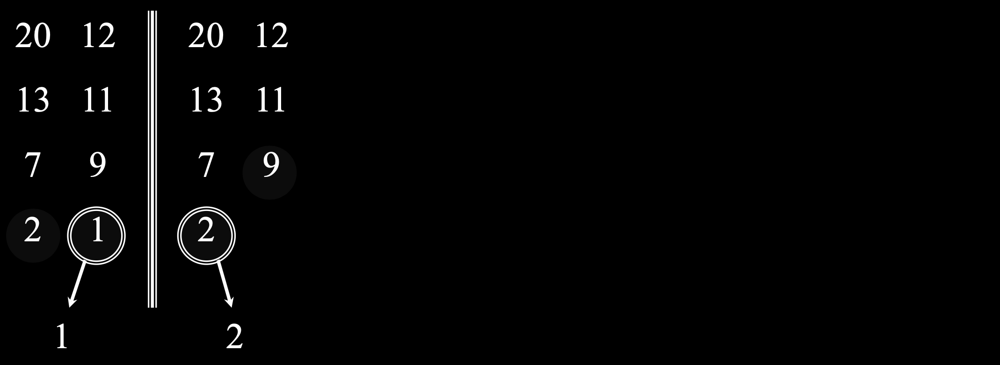
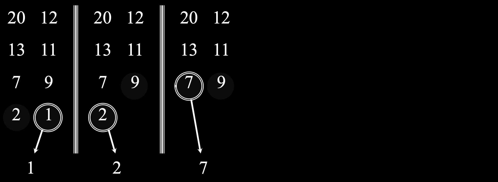
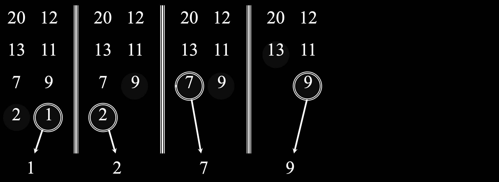
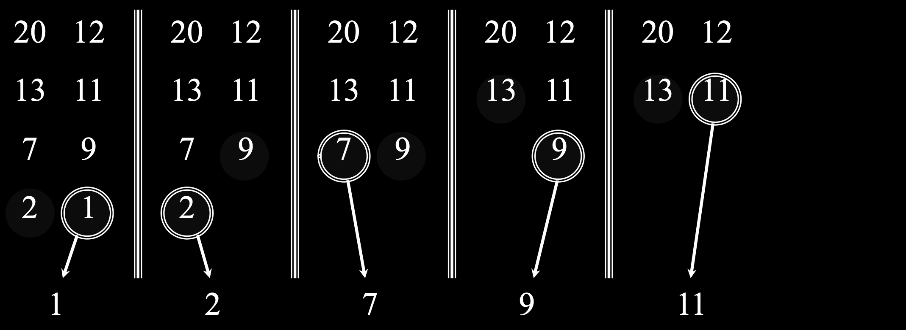
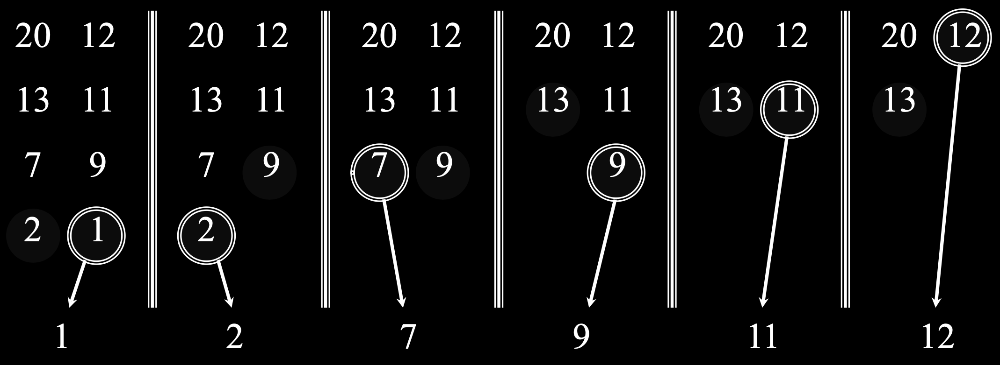
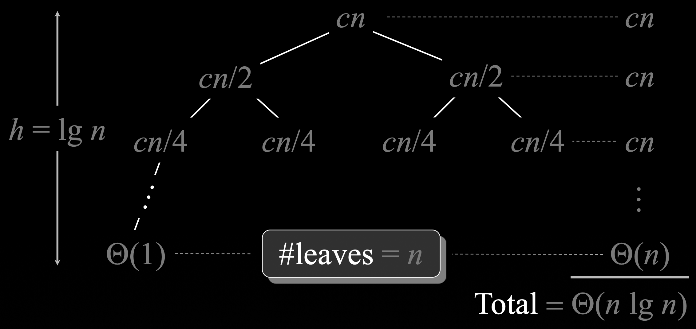

lecture #2
We are given a sequence of numbers and our goal is to rearrange them into a sorted order.
Input:
8 2 4 9 3 62 3 4 6 8 9Insertion sort is simple algorithm for sorting a small number of elements (or a sequence that is nearly sorted).
It works the way many people sort a hand of playing cards. We start with an empty left hand and the cards face down on the table. We then remove one card at a time from the table and insert it into the correct position in the left hand.
The algorithm iterates from the second element (j=2) to the end of the array. In each iteration, it takes the current element (the "key") and finds its correct place within the already sorted part of the array (A[1...j-1]).
First, we set up the main loop and store the current value as `key`.
for j <- 2 to n do
key <- A[j];
i <- j - 1;
Next, we shift elements greater than `key` one position to the right and insert the `key`.
for j <- 2 to n do
key <- A[j];
i <- j - 1;
while i > 0 and A[i] > key do
A[i+1] <- A[i];
i <- i - 1;
end
A[i+1] <- key;
end
Let's trace the algorithm on an example input array.
Here is the unsorted input sequence.
8 2 4 9 3 6The key is 2. We compare it with 8, shift 8 to the right, and insert 2.
2 8 4 9 3 6The key is 4. We compare it with 8, shift 8, and insert 4 before it.
2 4 8 9 3 6The key is 9. It's already in the correct position relative to the sorted subarray.
2 4 8 9 3 6The key is 3. We shift 9, 8, and 4 to the right before inserting 3.
2 3 4 8 9 6The key is 6. We shift 9 and 8 to the right, then insert 6.
2 3 4 6 8 9The final array is now sorted.
2 3 4 6 8 9How do we know for sure that an algorithm produces the correct result for every possible input?
A basic tool for this is mathematical induction.
We look for an iterative structure and identify "invariants" — properties that remain true at particular steps of the algorithm. We use induction to show that these guarantees hold.
To analyze iterative algorithms, we usually prove three statements about a loop invariant:
Let's apply this framework to prove that Insertion Sort is correct.
Loop Invariant: At the start of each iteration of the `for` loop (indexed by `j`), the subarray A[1...j-1] consists of the elements originally in A[1...j-1], but in sorted order.
Thus, Insertion Sort is correct.
Correctness isn't everything. For an algorithm to be useful, it must also be efficient.
Other important qualities include:
Our typical goal is to find the most time- and space-efficient algorithm for a problem.
The exact running time depends on the speed of the computer.
The Big Idea:
The running time depends on the number of comparisons and swaps.
In the worst-case scenario (e.g., an array sorted in reverse order), every element A[j] must be compared with every element in the entire sorted subarray A[1...j-1].
Cost constants:
$$T_{\text{worst}}(n)=c_1(n-1)+c_2\sum_{j=2}^{n} j+c_3\sum_{j=2}^{n}(j-1)$$
$$\sum_{j=2}^{n} j=\tfrac{n(n+1)}{2}-1,\quad \sum_{j=2}^{n}(j-1)=\tfrac{n(n-1)}{2}$$
$$T_{\text{worst}}(n)=c_1(n-1)+c_2\Big(\tfrac{n(n+1)}{2}-1\Big)+c_3\tfrac{n(n-1)}{2}$$
$T_{\text{worst}}(n) = \tfrac{c_2+c_3}{2}\,n^2 + \Big(c_1+\tfrac{c_2}{2}-\tfrac{c_3}{2}\Big)n - (c_1+c_2)$
Inner while does one comparison, no moves:
$$T_{\text{best}}(n)=c_1(n-1)+c_2(n-1)$$
Expected shifts per iteration: $\tfrac{j-1}{2}$
$$\mathbb{E}[T(n)]=c_1(n-1)+c_2\sum_{j=2}^{n}\Big(\tfrac{j-1}{2}+1\Big)+c_3\sum_{j=2}^{n}\tfrac{j-1}{2}$$
$$=c_1(n-1)+\frac{c_2+c_3}{2}\sum_{j=2}^{n}(j-1)+c_2(n-1)$$
$$\mathbb{E}[T(n)]=\big(c_1+c_2\big)(n-1)+\tfrac{(c_2+c_3)}{4}\,n(n-1)$$
This course will follow a general process for tackling algorithmic problems:
Let's consider a variation on the sorting problem.
What if you are given two already sorted arrays to begin with, instead of one unsorted array?
The core operation in Merge Sort is merging two sorted subarrays.
You can efficiently merge them into one larger sorted array by repeatedly taking the smaller element from each array and adding it to the merged output.






Merge Sort is a "Divide and Conquer" algorithm.
The main function recursively splits the array until it gets to subarrays of size 1 (the base case), then merges them back together.
_________________mergesort________________________
MERGE-SORT(A, p, r)
if p >= r // length 0 or 1
return // already sorted
q = floor((p + r) / 2) // midpoint
MERGE-SORT(A, p, q) // sort A[p:q]
MERGE-SORT(A, q + 1, r) // sort A[q+1:r]
MERGE(A, p, q, r) // merge them
The MERGE procedure is where the main work happens. We'll break it down into a few parts.
It takes the array A and the indices defining the two sorted subarrays, A[p:q] and A[q+1:r], and merges them in place.
First, calculate the lengths and create temporary arrays, L and R, to hold the two halves.
_________________merge____________________________
nL = q - p + 1 // length of A[p:q]
nR = r - q // length of A[q+1:r]
let L[0:nL-1] and R[0:nR-1] be new arrays
Next, copy the data from the main array into the temporary L and R arrays.
_________________merge____________________________
for i = 0 to nL - 1
L[i] = A[p+i]
for j = 0 to nR - 1
R[j] = A[q+j+1]
Now, walk through L and R, repeatedly picking the smaller element and placing it back into the original array A.
_________________merge____________________________
i = 0, j = 0, k = p
while i < nL and j < nR
if L[i] <= R[j]
A[k] = L[i]
i = i + 1
else
A[k] = R[j]
j = j + 1
k = k + 1
After the main loop finishes, one of the temporary arrays might still have elements left. Copy them over.
_________________merge____________________________
// Copy the rest of L, if any
while i < nL
A[k] = L[i]
i = i + 1
k = k + 1
// Copy the rest of R, if any
while j < nR
A[k] = R[j]
j = j + 1
k = k + 1
We can prove Merge Sort is correct using induction on the size of the input subarray, n.
To analyze efficiency, we use asymptotic notation to describe the growth rate of functions.
We can write a recurrence relation for the running time, T(n):
$T(n) = \begin{cases} \Theta(1) & \text{if } n=1 \\ 2T(n/2) + \Theta(n) & \text{if } n>1 \end{cases}$
We can visualize solving $T(n) = 2T(n/2) + cn$ with a recursion tree.
By expanding the tree, we can sum the cost at each level to find the total running time.
